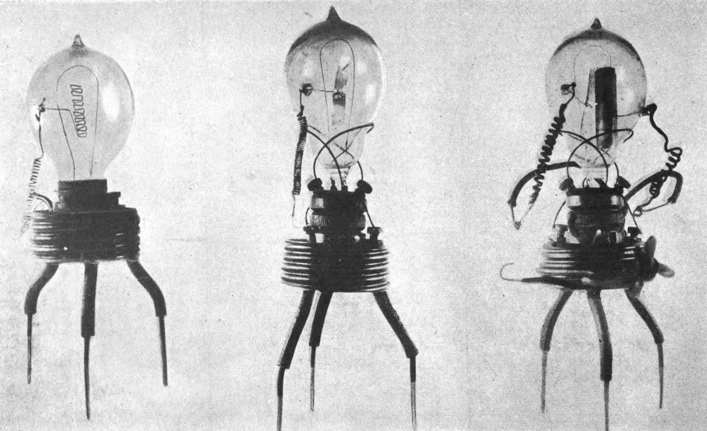
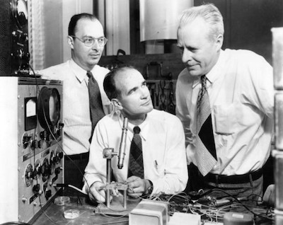
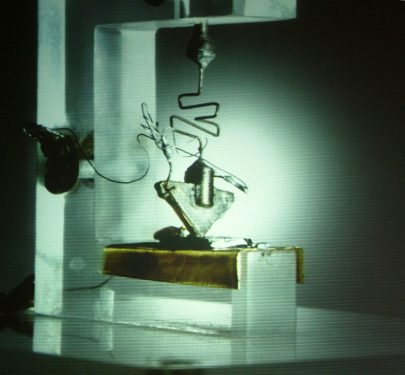

First Generation
In 1904, John Ambrose Fleming invented the first ever vacuum tube, patenting it as the Fleming Valve, and thus marking the beginning of the first ever generation of computers which consisted of vacuum tubes, the primary working component of early electronic circuits, and therefore, computers. Vacuum tubes essentially acted as early binary mediums, devices that can output 0s and 1s on a circuit. Due to the size of the vacuum tubes, the first generation computers had to be massive to accommodate such installments and complex circuitry. The vacuum tubes have a primary disadvantage, they needed warm-up times before achieving peak-performance which was highly energy intensive and very inefficient. The three most notable first-generation computers to use these were the ENIAC (Electronic Numerical Integrator And Computer), EDVAC (Electronic Discrete Variable Automatic Computer), and the UNIVAC (Universal Automatic Computer).
Second Generation
 43 years later, on December 23, 1947, bell laboratory scientists John Bardeen, Walter Houser Brattain, and William Shockley presented and recorded the first ever successful testing of the transistor. Having been assembled 7 days prior, this invention marked the beginning of the Second Generation of computers, paving a way for computer modernization. Up until today, transistors still make up as the most basic component of a modern computer. Transistors provide numerous advantages over vacuum tubes; They were significantly cheaper and more compact, they required no warm-up time, and they are more energy efficient overall, requiring less power while delivering better performance.
Third Generation
Not long after, 11 years later, on September 12, 1958, Jack S. Kilby presented the first ever working integrated circuit. The integrated circuit is composed of groups of transistors on a slightly larger breadboard. The integrated circuit was designed to further decrease the size of electrical components whilst aiming for better performance. Originally made for the military, Integrated Circuits became available to commercial use shortly after, and are one of the basic components of a modern computer just like the transistor.
Fourth Generation

13 years later, on November 15, 1971, the first ever microprocessor, Intel 4004 was created by the Intel Corporation. Compacting multiple transistors into a single microchip, the microprocessor promises to deliver exceptional performance and process more instructions, ultimately becoming one of the primary components of a modern computer, and soon being coined the title: “The heart and brain of the computer”. It was yet another breakthrough in the improvement of digital technology, paving the way for the modernization of digital technology.
Fifth Generation
9 years later, in 1980, Japan took the lead in technological development, manufacturing high-performance computers, creating the so-called Fifth Generation, sparking a race of technological development between it and the United States. The ultimate reward? Technological Domination. This period marks the beginning of the modern computing era and is still the current generation of computing up to this day.